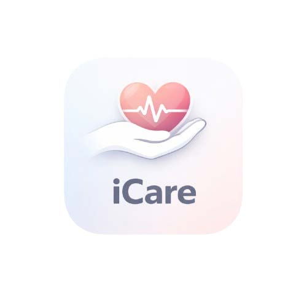
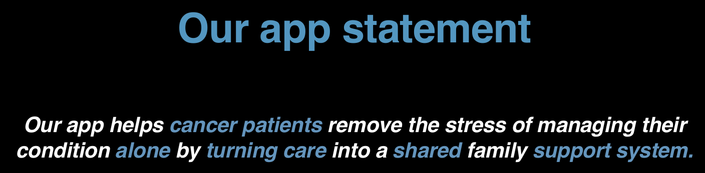
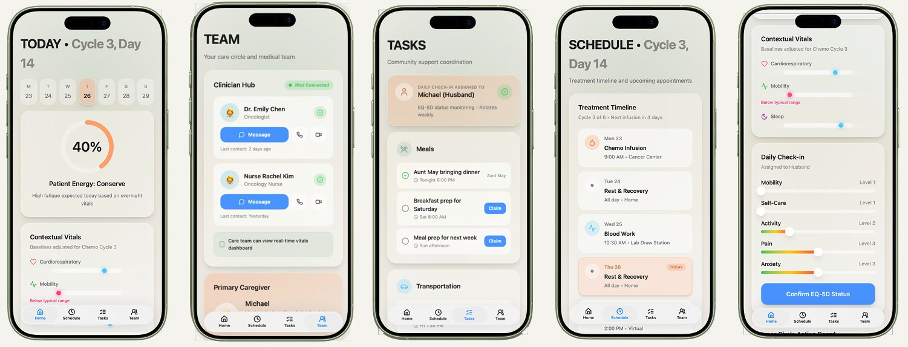
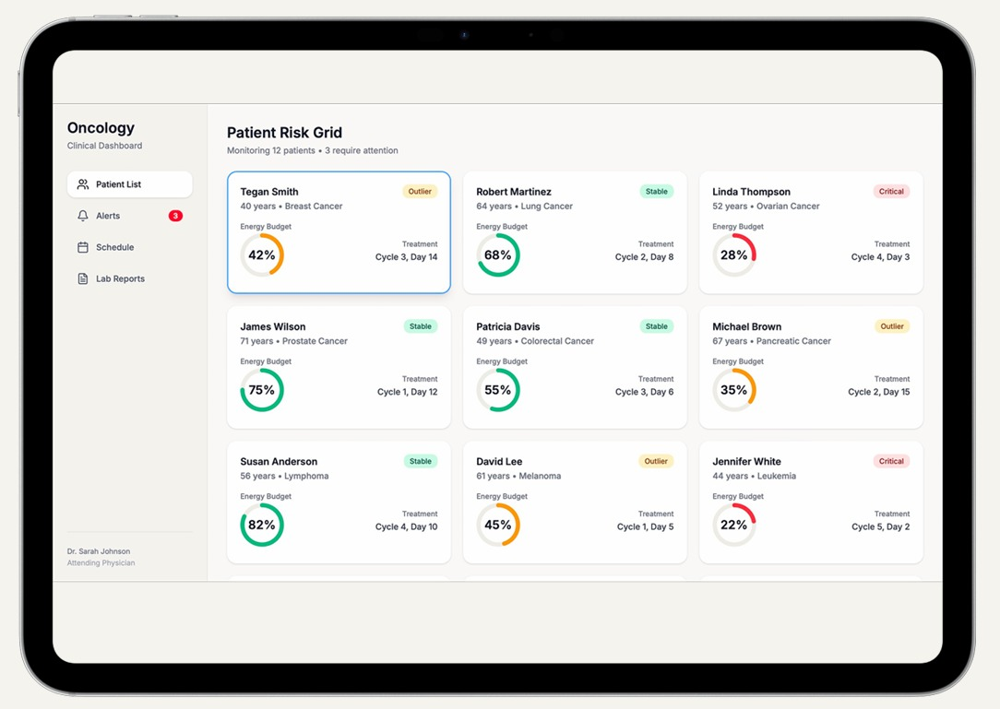

01

iCare
A calm command-centre for cancer treatment at home — coordinating clinicians, family and the patient's own energy across every chemo cycle. Winner, RMIT × Northern Health iOS Hackathon 2026.

The problem
Going through chemotherapy means juggling appointments, fluctuating energy, and a circle of family and clinicians who rarely see the full picture. The mental load falls on the patient when they have the least to give.
My role
Co-led design and development in a 3-day sprint. I drove the product concept and UX, designed the end-to-end app flow and high-fidelity iOS prototype in Figma, and worked directly with clinicians and mentors to translate real patient needs into the build.
What I designed & built
- Energy-first home — a daily readout ("Patient Energy: Conserve") driven by overnight vitals, so the patient knows what the day can hold.
- Care circle & Clinician Hub — oncologist and nurse a tap away, with an iPad-connected real-time vitals dashboard for the medical team.
- Community task board — meals, transport and check-ins that family and friends can claim, distributing the load.
- EQ-5D daily check-in — a validated quality-of-life measure (mobility, self-care, activity, pain, anxiety) turned into a 20-second interaction.


View app flow
Northern Health partnership